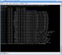
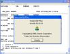

| Recurso (1) | Datos del recurso (1) | Recurso (2) | Datos del recurso (2) |
|---|---|---|---|
|
Autoría: Thomas Hawk. Licencia: CC-by-nc. Procedencia: http://www.flickr.com/photos/thomashawk/3318535957/ |
 |
Autoría: jonwatson. Licencia: CC-by-nc-sa. Procedencia: http://www.flickr.com/photos/heatsink/59179761/ |
|
|
Autoría: nathalielaure. Licencia: CC-by. Procedencia: http://www.flickr.com/photos/nathalielaure/2787715668/ |
Autoría: OcDiego. Licencia: CC-by-sa-nc. Procedencia: http://www.flickr.com/photos/josediegosanz/4628901266/ |
||
|  |
Autoría: Manuel Cernuda. Licencia: CC-by. Procedencia: http://www.flickr.com/photos/melkorcete/44959557/ |
 |
Autoría: Tim Morgan. Licencia: CC-by. Procedencia: http://www.flickr.com/photos/timothymorgan/75593157/ |
|
Autoría: Extra Ketchup. Licencia: CC-by-sa. Procedencia: http://www.flickr.com/photos/extraketchup/749315946/ |
Autoría: Christian González Verón. Licencia: CC-by. Procedencia: http://www.flickr.com/photos/vastlk/53624909/ |